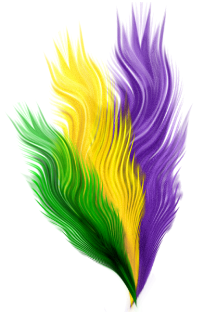

<ion-header>
    <ion-toolbar color="success">
      
          <ion-button fill="outline" color="success" slot="start" (click)="cerrar()" >
              <ion-icon slot="icon-only" color="light" name="undo" ></ion-icon>
            </ion-button>
        <ion-title style="text-align: start">{{tipo}}</ion-title>
      
   
    </ion-toolbar>
  </ion-header>
  
  <ion-content>
      <ion-card style="background-color:yellow">
          <ion-card-header>
            
            <ion-card-title>Nombre</ion-card-title>
          </ion-card-header>
         
        
          <ion-card-content style="font-size: 30px">
           {{nombre}}
          </ion-card-content>
        </ion-card>
        <ion-card style="background-color: lightsalmon">
            <ion-card-header>
              
              <ion-card-title>Director</ion-card-title>
            </ion-card-header>
          
            <ion-card-content style="font-size: 30px">
             {{director}}
            </ion-card-content>
          </ion-card>
          <ion-card style="background-color: orange">
              <ion-card-header>
                
                <ion-card-title>Origen</ion-card-title>
              </ion-card-header>
            
              <ion-card-content style="font-size: 30px">
               {{origen}}
              </ion-card-content>
            </ion-card>
        
          <ion-card style="background-color:orangered">
              <ion-card-header>
                
                <ion-card-title>Horario</ion-card-title>
              </ion-card-header>
            
              <ion-card-content >
                  <ion-item *ngFor="let item of horario;let i = index">
               {{item.horario}}
               {{item.ubicacionnombre}}
               
               </ion-item>
              </ion-card-content>
            </ion-card>
<ion-content>
            <ion-infinite-scroll #infiniteScroll threshold="10px" >
                <ion-refresher (ionRefresh)="doRefresh($event)">
                    <ion-refresher-content pullingIcon="arrow-dropdown" pullingText="Arrastra para refrescar" refreshingSpinner="crescent"
                      refreshingText="Cargando...">
                    </ion-refresher-content>
                  </ion-refresher>
            <ion-list #dynamicList id="dynamicList" >

            <ion-card *ngFor="let item of listaComentariosPane;let i = index" >
                <ion-card-header>
            
                    <ion-card-title>{{item.usuario}}</ion-card-title>
                  </ion-card-header>
                  <ion-card-content style="font-size: 30px">
                      {{item.comentario}}
                     </ion-card-content>
      
              </ion-card>
            

          </ion-list>
        </ion-infinite-scroll>
            </ion-content>

            <ion-fab vertical="bottom" horizontal="end" slot="fixed">
                <ion-fab-button (click)="comentario()">
                  <ion-icon name="add"></ion-icon>
                </ion-fab-button>
              </ion-fab>
          </ion-content> 
          
  

  <ion-footer >
      <ion-toolbar color="success">
        <ion-title color="light" style="font-size: 15px; text-align: center">COAC Córdoba.</ion-title>
      </ion-toolbar>
    </ion-footer>
